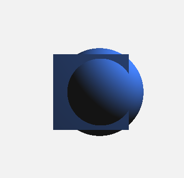
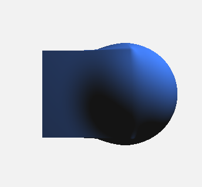
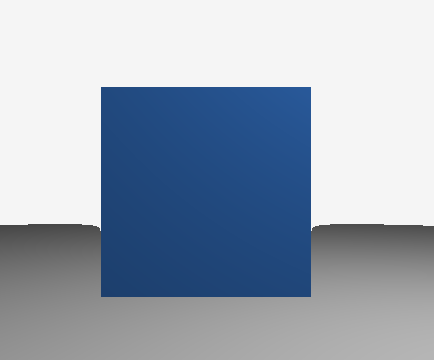
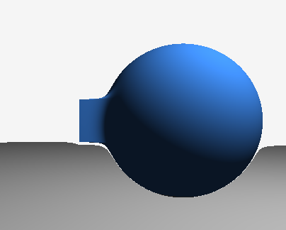

„Dostali sme sa k najfascinujúcejšej časti môjho projektu. Do tohto momentu sme sa naučili zobraziť jednu sféru a vypočítať pre ňu základné osvetlenie. Ale Raymarching sa stáva skutočnou mágiou až vtedy, keď prejdeme k procedurálnemu modelovaniu. Na rozdiel od klasickej počítačovej grafiky, kde sa objekty skladajú z miliónov polygónov, v mojom projekte je každý objekt iba matematickou rovnicou.
Tu nenájdete žiadne vrcholy (vertices), hrany ani textúrové mapovanie. Namiesto toho, aby sme kreslili povrch, pýtame sa priestoru: 'Čo sa tu nachádza?'. Tento prístup sa nazýva CSG (Constructive Solid Geometry). Je to metóda budovania zložitých telies z najjednoduchších primitívov pomocou logických operácií. Práve o tom budeme hovoriť ďalej: ako som premenil matematické vzorce na nástroje digitálneho sochára.“
„Skôr než otvoríme kód, je dôležité pochopiť, s akými nástrojmi operujem. Keďže každý bod priestoru pozná vzdialenosť k najbližšiemu objektu cez SDF (Signed Distance Function), môžeme s týmito vzdialenosťami manipulovať pomocou elementárnej logiky.
„Moja cesta vývoja bola rozdelená na etapy, z ktorých každá pridávala novú matematickú možnosť. Poďme si rozobrať každý súbor detailne.“

V súbore Demo3_SphereAndBox.java som prvýkrát spojil dve rôzne geometrie. V metóde map() som vypočítal vzdialenosť k sfére a kocke samostatne a potom som použil funkciu min(sphere, box). Ako vidíte na snímke obrazovky, vytvára to dokonale ostrý spoj. Grafická karta jednoducho porovnáva dve čísla: 'Ktorý objekt je v tomto bode bližšie ku kamere?'. Toto je fundamentálny princíp CSG modelovania.

Tvrdé spoje vyzerajú umelo. Preto som v súbore Demo4_SmoothUnion.java implementoval jednu z najsilnejších funkcií Raymarchingu — Smooth Minimum (smin). Na snímke vidíte, ako sféra a kocka akoby 'spletaujú', čím vytvárajú plynulý mostík. To imituje povrchové napätie kvapalín alebo organiku (svaly, kožu). Matematicky nielen vyberáme minimum, ale pridávame koeficient vyhladzovania, ktorý mieša polia vzdialeností.

Demo6_Subtraction.java demonštruje pokročilú prácu s geometriou. Na novej snímke vidíme nie jednoduchý rez, ale **dutú kocku**, v ktorej je vyrezaný otvor. To sa dosahuje použitím absolútnej hodnoty (abs) funkcie vzdialenosti, čo premieňa plné teleso na tenkú škrupinu. Spojenie tejto techniky s odčítaním sféry (max(-sphere, box)) vytvára zložitú architektonickú formu bez potreby zložitej vnútornej topológie siete.

Súbor Demo7_Scaling.java demonštruje prácu s rozmermi. Dôležitý detail: nezmenil som polomer sféry v argumentoch funkcie. Zmenil som mierku samotného priestoru p predtým, než som ho odovzdal funkcii. To umožňuje vytvárať efekty deformácie, napríklad premenu kocky na tenkú platňu alebo dlhý stĺp, jednoduchou manipuláciou s vektorom súradníc.
„V mojom kóde ste si mohli všimnúť zápisy ako p - spherePos alebo p / scale. Toto je kľúčový koncept Raymarchingu — Domain Transformation.
V klasických enginoch (ako Unity alebo Unreal) má objekt svoju 'transformáciu' (pozíciu, rotáciu). V Raymarching sa objekt vždy nachádza v centre súradníc (0,0,0). Aby sme posunuli sféru o 5 jednotiek doprava, nehýbeme sférou. Hýbeme celým priestorom o 5 jednotiek doľava pre letiaci lúč. Hovoríme lúču: 'Predstav si, že svet sa posunul'.
Toto je pravdepodobne najpôsobivejšia možnosť, ktorú som implementoval. Pomocou operácie mod() (zvyšok po delení) na vektore p môžeme priestor zacykliť. Lúč letí vpred, ale každých 5 metrov sa matematicky vracia do bodu 0. Výsledok — jedna jediná sféra z Demo 1 sa premení na nekonečný les sfér siahajúci až za horizont.
„Na tomto stupni som vytvoril silný nástroj. Pomocou súborov Demo3 až Demo7 som dokázal, že Raymarching nie je len spôsob ako kresliť gule, ale plnohodnotný systém geometrického modelovania. Naučili sme sa spájať tvary, vyrezávať do nich otvory, plynulo ich zlievať do jednej hmoty a ovládať mierku priestoru.
Teraz sme sa naučili byť matematickými sochármi: vieme vytvárať komplexné tvary, deformovať ich a dokonca zacykliť priestor do nekonečna pomocou Domain Repetition. Ale pozrite sa na obrazovku – zatiaľ tieto objekty vyzerajú len ako ploché farebné škvrny. Chýba im reálna váha, chýba im kovový lesk a nevrhajú žiadne tiene. Existujú v priestore, ale neinteragujú s ním. Preto v nasledujúcom bloku urobíme krok od čistej geometrie k skutočnej optike. 'Zapneme svetlo' a rozoberieme si, ako pomocou SDF Gradients vypočítať Normals – ten istý 'citlivý orgán' objektu, ktorý mu umožňuje vidieť zdroj svetla. Premeníme tieto abstraktné figúry na reálne materiály pomocou Phong Reflection Model a naučíme sa vytvárať Soft Shadows, ktoré sa matematicky vypočítavajú priamo 'on the fly'.